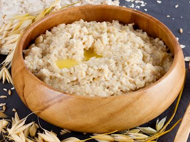

Barley Porridge
Back to Main Page

Barley Porridge was a staple in Viking's diet. It was fairly easy to make and barley was abundant. It also provided nutrients like some fruit and nut that was essential for their life style.
Ingredients
- 3-4 dl coarse barley flour
- 1 litre water
- 2 apples and maybe a handful of hazelnuts
- salt
Steps
- Boil the water.
- Once the water boils, whisk down the flour a little at a time.
- Continue boiling for 5 minutes while continuously stirring.
- The apples and chopped nuts are boiled the last minutes.
- Take the pot off the fire and place it close to the fire for 30 minutes to an hour.